Nghệ An – quê hương Bác Hồ
Vô xứ Nghệ thăm làng Sen quê Bác: Di tích NỔI TIẾNG từ Bắc vào Nam
Làng Sen quê Bác - một ngôi làng nhỏ thơm ngát hương sen, với hình ảnh thân thuộc, gần gũi chắc chắn sẽ mang đến những câu chuyện tuyệt vời cho bạn trong hành trình du lịch Nghệ An.
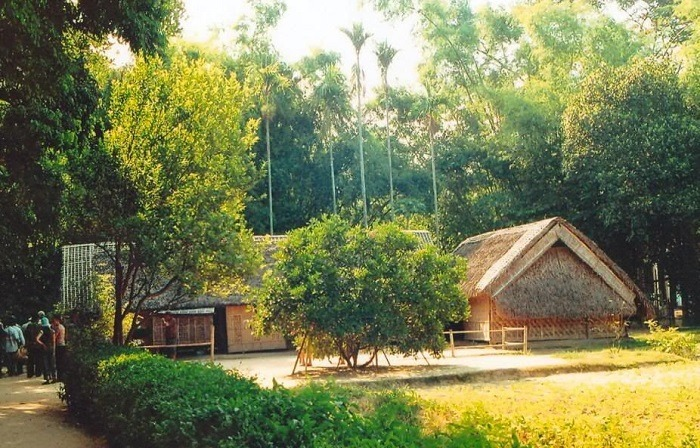
Vô xứ Nghệ thăm làng sen quê Bác: Di tích NỔI TIẾNG từ Bắc vào Nam (Ảnh: Sưu tầm)Ai về Nghệ An, nhớ ghé thăm làng Sen quê Bác. Nơi ấy có mái nhà tranh đơn sơ, dưới những lũy tre xanh bóng mát, có tiếng khung cửi mẹ dệt trong trưa hè oi ả, có hương hoa sen tỏa ngát cả một vùng trời. Đó chính là những hình ảnh gắn bó một thời của chủ tịch Hồ Chí Minh - địa điểm du lịch Nghệ An mà chúng ta khám phá trong bài viết dưới đây!
1. Làng Sen quê Bác ở đâu?
Xứng danh mảnh đất “địa linh nhân kiệt”, Nghệ An là nơi sinh biết bao nhiêu bậc hiền tài có đóng góp to lớn cho non sông, đất nước. Trong đó có người lãnh tụ vĩ đại kính yêu của dân tộc Việt Nam, chính là chủ tịch Hồ Chí Minh.
Làng Sen quê Bác còn có tên gọi khác là gì? Mọi người còn biết đến nơi này với tên gọi khác là làng Kim Liên. Cậu bé Nguyễn Sinh Cung (tên khai sinh của Bác) đã ghi dấu tuổi thơ của mình tại ngôi làng Sen, trước khi ra đi tìm đường cứu nước và trở thành người thay đổi vận mệnh cho dân tộc.
Hiện nay, làng Sen quê Bác được xem là di tích lịch sử, niềm tự hào của người dân xứ Nghệ. Gần nửa thế kỷ trôi qua, có biết bao nhiêu đoàn du khách trong và ngoài nước tìm về làng Sen với lòng thành kính và biết ơn sâu sắc.
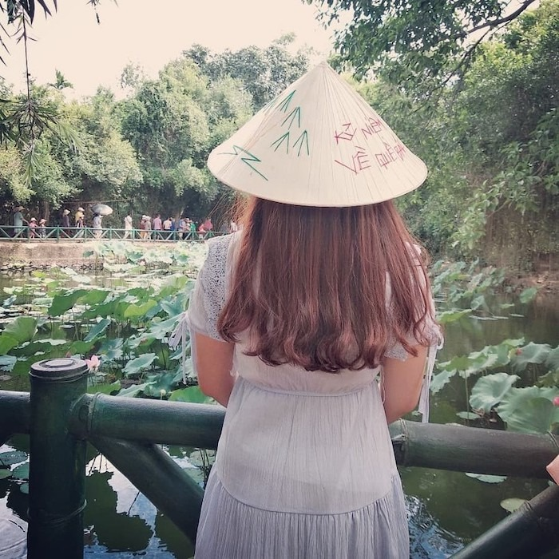
Địa chỉ làng Sen quê bác là điểm dừng chân đáng nhớ mà bạn nên trải nghiệm (Ảnh: sưu tầm)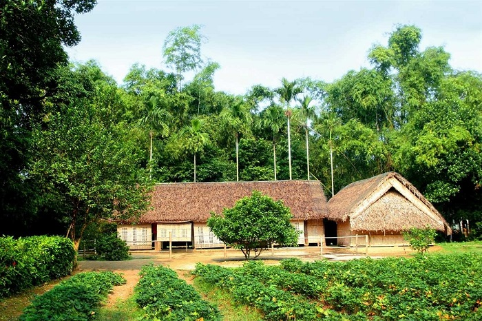
Làng Sen quê Bác Hồ - Không gian quen thuộc của một vùng quê yên bình (Ảnh: sưu tầm)Bạn có thể ghé thăm làng Sen quê Bác vào bất kể mùa nào trong năm, nhưng tháng 5 được coi là thời điểm mát mẻ nhất trong năm, thuận tiện cho chuyến du lịch Nghệ An.
2. Đến làng Sen quê Bác nên thăm những địa điểm nào?
Trong chuyến đi trở về quê Bác, du khách không thể bỏ qua những địa điểm sau:
2.1. Đi dạo ao sen - giếng Cốc
Bạn có biết vì sao ngôi làng này được đặt tên là “Sen” không? Bởi vì xung quanh làng được trồng rất nhiều sen trong hồ. Cứ đến mùa sen, ngôi làng Bác như được ủ hương thơm tươi mát làm động lòng du khách.
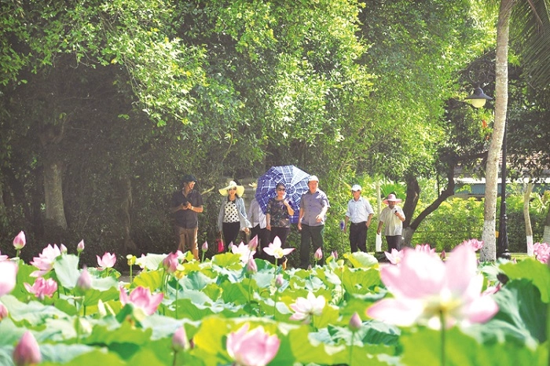
Ao sen thơm ngát, cho du khách thư giãn (Ảnh: Sưu tầm)Dạo quanh làng, bạn sẽ bắt gặp những hình ảnh vô cùng bình dị như đôi bờ tre rì rào trong gió, bụi râm bụt đung đưa, hàng hoa cau, hoa bưởi thơm ngát. Và còn đó là giếng Cốc, cây đa - khung cảnh vô cùng quen thuộc của những ngôi làng Việt thời xưa, đưa ta về với sự bình yên và mộc mạc nhất.
2.2. Vào thăm nhà Bác
Sau hàng tre xanh ngát, bạn sẽ bắt gặp ngôi nhà đơn sơ với 5 gian lợp mái của gia đình cụ Phó bảng Nguyễn Sinh Sắc - thân sinh của chủ tịch Hồ Chí Minh. Ngồi nhà được dựng lên từ năm Tân Sửu 1901.
Nhà được bao bọc bởi hàng rào hoa râm bụt, phía trước có hai khoảng sân và một mảnh vườn nhỏ. Toàn bộ căn nhà được dựng bằng tre và gỗ nên vô cùng mộc mạc và đơn sơ.
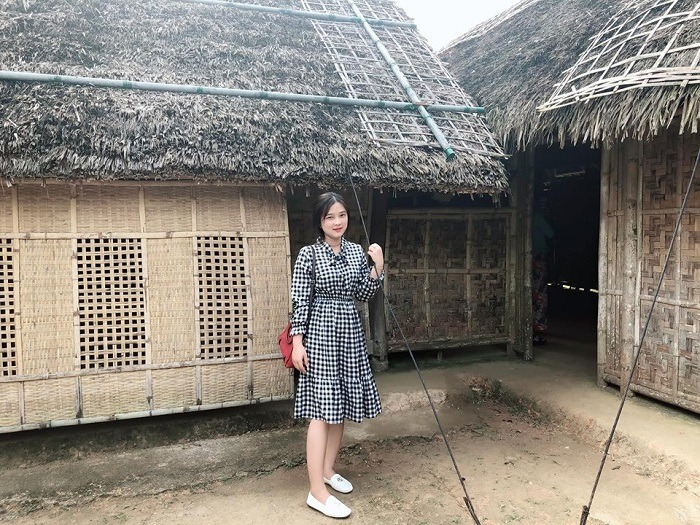
Tham quan căn nhà của Bác (Ảnh: Sưu tầm)Nhà Bác được xây dựng theo đúng khuôn mẫu truyền thống, với 5 gian: 2 gian ngoài là nơi đặt bàn thờ và tiếp khách, gian thứ ba là nơi nghỉ ngơi của bà Nguyễn Thị Thanh - chị gái của Bác, hai gian còn lại là nơi sinh hoạt chung của cả gia đình.
Trong nhà có những vật dụng giản dị như bao căn nhà bình dân Việt Nam khác, như chiếc chõng tre, phản gỗ, chạn bát, chum sành đựng nước,... Tất cả những món đồ kỷ vật này, cho đến nay vẫn được gìn giữ nguyên vẹn.
2.3. Ghé cụm di tích lịch sử cây Đa, sân vận động, đền làng Sen
Từ làng Sen quê Bác, du khách có thể ghé thăm cụm di tích lịch sử cây Đa, sân vận động và đền thờ. Cả cuộc đời cống hiến cho sự nghiệp cách mạng dân tộc, Bác chỉ về thăm quê 2 lần (năm 1957 và năm 1961), cây đa, sân vận động, đền làng là những nơi Bác từng ghé qua khi trò chuyện với người dân. Với người dân Nghệ An, để hồi tưởng những ký ức về Bác, mỗi người lại chọn lưu giữ một khoảnh khắc, cảm xúc riêng. Đó có thể là đến những nơi Bác từng sống và từng đi qua.
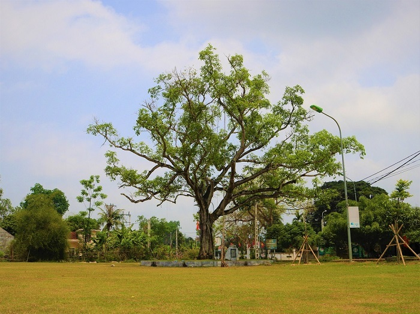
Hình ảnh cây Đa sừng sững ngay trước khu trưng bày và lưu niệm Chủ tịch Hồ Chí Minh (Ảnh: Sưu tầm)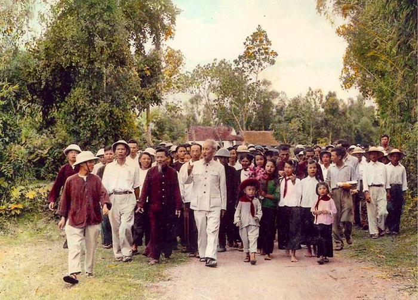
Năm ấy Bác về, người dân đổ về sân vận động đông như nêm. Đối với những người đã từng chứng kiến, hình ảnh này thực sự rất xúc động (Ảnh: Sưu tầm)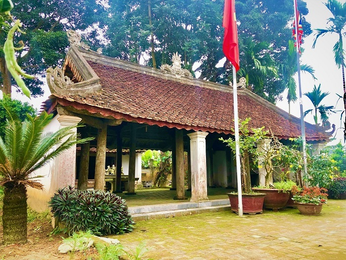
Mái đền làng phủ màu rêu phong, là nơi người dân dâng hương, tưởng nhớ đến Bác (Ảnh: Sưu tầm)2.4. Thăm mộ cụ Hoàng Thị Loan (mẹ Bác)
Hài cốt của cụ bà Hoàng Thị Loan - thân mẫu của Bác Hồ được mai táng tại núi Động Tranh, cách làng Sen chừng 5km. Ngôi mộ được che chắn với mái bằng bê tông cách điệu hình chiếc khung cửi, như gợi nhớ hình ảnh cụ bà dệt cửi nuôi con.
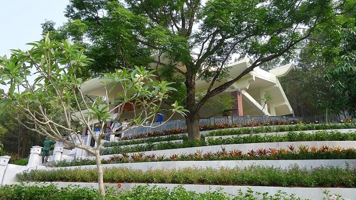
Di tích mộ cụ bà Hoàng Thị Loan (Ảnh: Sưu tầm)3. Kinh nghiệm tham quan làng Sen quê Bác
Để khám phá khu du lịch làng Sen quê Bác được trọn vẹn, bạn không thể bỏ qua những kinh nghiệm quý báu về ăn uống và chỗ ở sau:
3.1. Ăn gì khi đến làng Sen quê Bác?
Nghệ An đâu chỉ nổi tiếng với những cảnh đẹp, di tích lịch sử thiêng liêng, mà ở đó còn có nền ẩm thực vô cùng phong phú. Những món ăn đặc sản Nghệ An bạn nên thưởng thức nếu có dịp tới đây là:
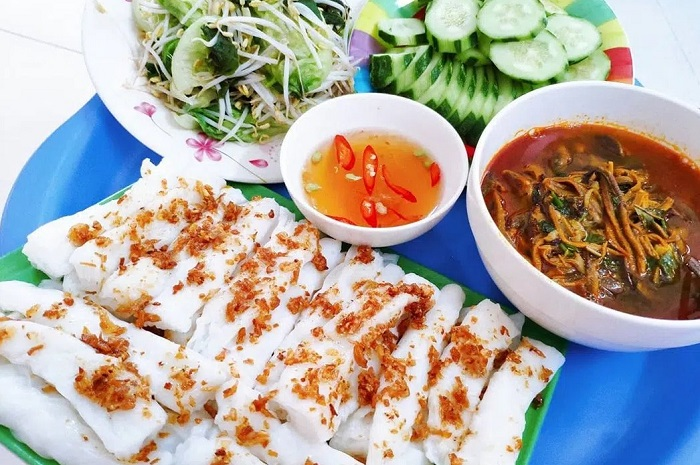
Những món ăn không thể bỏ qua khi đến Nghệ An (Ảnh: Sưu tầm)- Miến lươn Nghệ An: Đây là món ăn chiếm được nhiều cảm tình từ thực khách nhất. Miến lươn Nghệ An có vị cay đặc trưng, mùi thơm, ngọt béo từ lươn, cùng sợi bún dai dai, mềm mềm, ăn cuốn vô cùng.
- Súp lươn Nghệ An: Súp lươn Nghệ An là món ăn độc đáo, từng được CNN bình chọn là một trong 7 món ăn sáng ngon nhất thế giới. Khi ăn súp lươn, bạn có thể chọn giữa bánh mì hoặc bánh mướt để ăn kèm.
- Bánh mướt Diễn Châu: Loại bánh này có vẻ ngoài khá giống với bánh cuốn ngoài Hà Nội, nhưng không có nhân. Một đĩa bánh mướt Diễn Châu hoàn chỉnh sẽ gồm có hành phi thơm, bát nước chấm chanh ớt, và một chút rau sống ăn kèm. Món ăn tuy đơn giản nhưng lại khiến người ta nhớ mãi.
- Bánh đa Đô Lương: Nếu có dịp du lịch Nghệ An, bạn nhớ mua bánh đa Đô Lương mùa về làm quà nhé! Bánh đa ở đây được làm từ bột gạo, tỏi, tiêu và các gia vị khác. Bánh giòn, có thể ăn trực tiếp hoặc ăn kèm với các món ăn khác cũng rất hợp.
3.2. Ở đâu khi du lịch Nghệ An?
Ngoài làng Sen quê Bác, Nghệ An còn có vô số điểm tham quan và du lịch hấp dẫn khác. Vì vậy, bạn nên chọn nơi nghỉ dưỡng có vị trí thuận lợi để tiện hơn trong việc di chuyển giữa các địa điểm du lịch.
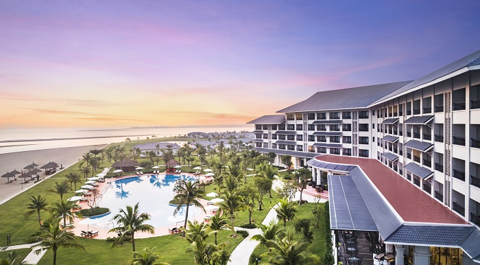
Melia Vinpearl Cua Hoi Beach Resort - Điểm nghỉ dưỡng lý tưởng cho chuyến du lịch Nghệ AnMelia Vinpearl Cua Hoi Beach Resort chính là lựa chọn lý tưởng cho chuyến du lịch làng Sen quê Bác của bạn. Tọa lạc tại đường Bình Minh, phường Nghi Hải, thị xã Cửa Lò, tỉnh Nghệ An. Melia Vinpearl Cua Hoi Beach Resort được đánh giá là một trong những khách sạn có dịch vụ tốt, cũng như mang đến cho bạn những trải nghiệm tuyệt vời như:
- Phòng nghỉ hạng sang, không gian nội thất tiện nghi mang đến cho bạn sự riêng tư nhất;
- Vị trí thuận lợi, rất gần với các điểm du lịch nổi tiếng tại Nghệ An như khu di tích lịch sử Kim Liên, vườn quốc gia Pù Mát, bãi biển Cửa Lò Nghệ An...;
- Tận hưởng kỳ nghỉ dưỡng trọn vẹn với nhiều hoạt động vui chơi trên biển thú vị, cùng dịch vụ spa cho bạn thư giãn...;
- Trải nghiệm không gian ẩm thực sang trọng, đẳng cấp tại hệ thống nhà hàng, quán bar ngay tại khách sạn.
Melia Vinpearl Cua Hoi Beach Resort chính là địa chỉ nghỉ dưỡng đáp ứng mọi nhu cầu về cả không gian, lẫn dịch vụ cho khách hàng
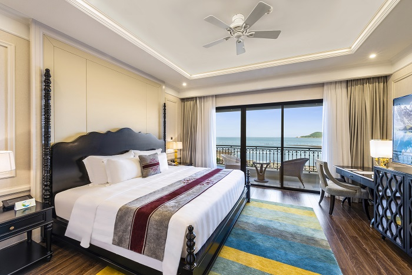
Không gian phòng đẳng cấp, nội thất tiện nghiTrước giờ, chúng ta chỉ biết đến những bài thơ về làng Sen quê Bác nhưng chưa từng một lần được đặt chân đến. Qua chuyến đi này, hình ảnh về làng Sen quê Bác trên trang giấy, bút mực ấy hiện lên thật mộc mạc và bình dị giữa hiện thực. Trải nghiệm này chắc hẳn sẽ khiến nhiều người xúc động khi được chứng kiến những khoảnh khắc, dấu vết mà Bác đã từng đi qua. Trên đây là giới thiệu về làng Sen Bác Hồ, mong rằng thông tin này sẽ hữu ích đối với bạn!